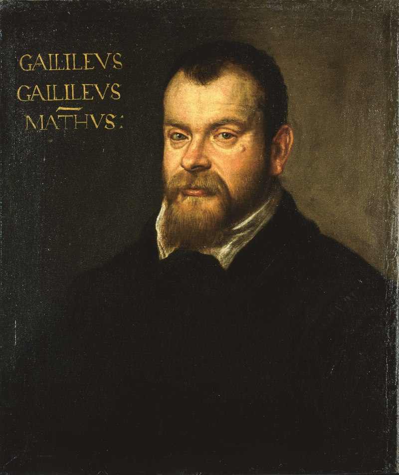
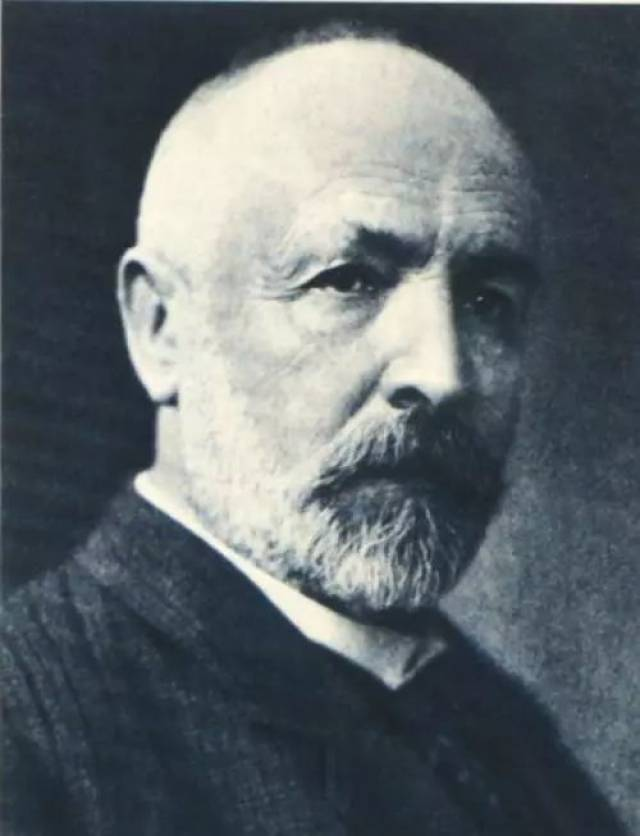

展厅 1
The Intuition
直觉
什么是无穷？
大多数人会想到——自然数：1, 2, 3, 4, 5 ……
永远写不完。这就是我们对无穷的直觉：
一个永远加不完的序列。
试试看，你能数到多少？
1638 年，有个人发现了一件奇怪的事……
展厅 2
The Paradox
悖论
1638 年，伽利略比较了两串数字。
第一串，是自然数——从 1 开始，每个数加 1：
自然数
完全平方数
第二串，是完全平方数——某个自然数的平方：
1²=1, 2²=4, 3²=9, 4²=16, 5²=25, …
亲手数一数：平方数有多少？
下面是前 50 个自然数。
你觉得哪些是完全平方数？点出来试试。
展厅 3
The Question
提问
250 年后，格奥尔格·康托尔问了一个人没问过的问题：
所有的无穷，都一样大吗？
他先问了一件具体的事：0 和 1 之间的小数，能排成一张表吗？
试着写几个 0 到 1 之间的小数（建议至少 8 个）。
你的列表是空的。开始写吧。
展厅 4
The Diagonal
对角线
康托说："让我看看这张表的对角线。"
点击按钮，看康托如何找到对角线。
展厅 5
The Consequence
后果
这个新数字不在表里。
但表声称包含了所有小数。
矛盾。
所以——那张表从来就不完整。
不管你怎么排，对角线每位 +1 总能造出一个不在表里的数字。
排成表，意味着每个小数都有一个编号——
第 1 个、第 2 个、第 3 个……
但现在证明了：小数排不成表。
总有一些小数，拿不到任何编号。
还记得伽利略吗？
能配对，就是一样多。
配不上——就是更多。
自然数
1, 2, 3, 4, 5, …
每个数都有编号：
第 1 行、第 2 行、第 3 行……
无穷
0 到 1 之间的小数
0.3, 0.14, 0.827, …
总有数拿不到编号：
对角线总能造出漏网的
无穷，但更大
0 到 1 之间的小数，
比所有的自然数还要多。
不是多一个两个。
是多到排不进任何一张表。
无穷，也有大小之分。
有的无穷，比另一些无穷更大。
展厅 6
The Epitaph
墓志铭

1638 年
伽利略看到了无穷的影子，转身走开。

1874 年
康托走了进去。
人类第一次知道，无限不止一种。
有些无限，比另一些无限更大。